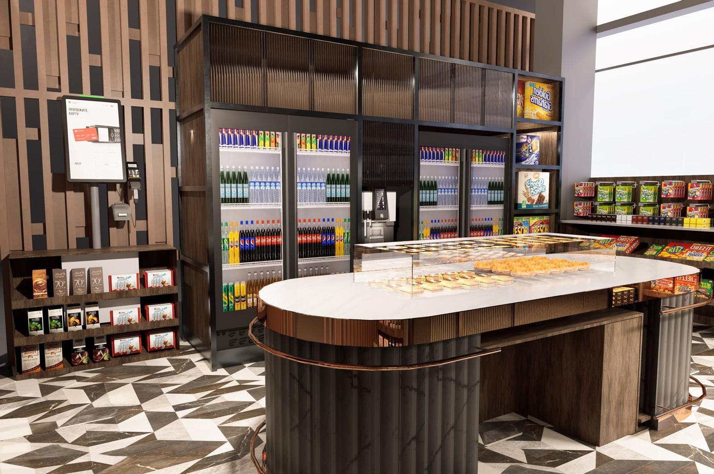
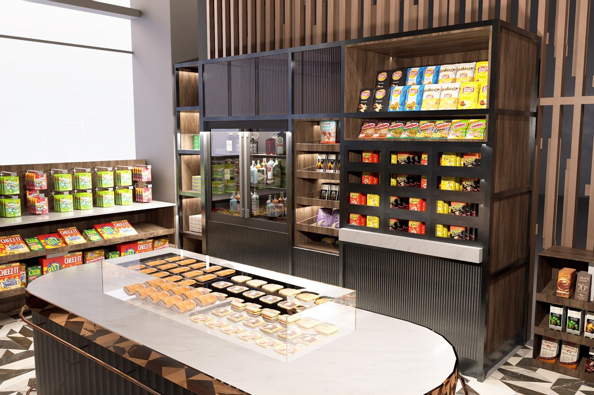

Tasarım
Her mağaza, bulunduğu mekânın mimarisine ve ölçülerine göre projelendirilir. Mobilya, aydınlatma, soğutma ve ürün yerleşimi tek bir proje kapsamında ele alınır.
Personelsiz market sistemleri
Lobby Store; mimari tasarım, yazılım, kurulum ve günlük işletme süreçlerini tek çatı altında sunan personelsiz market sistemidir. Otel, rezidans, plaza ve kampüs lobilerinde 7/24 kesintisiz hizmet verecek şekilde tasarlanmıştır.

Sistem
Vardiya planlaması, stok sayımı ve kasa mutabakatı gibi geleneksel market işletmeciliğinin yoğun emek gerektiren süreçleri, Lobby Store'da yazılım tarafından yürütülür. Böylece işletme yükü azalır; satış ve stok verileri anlık olarak izlenebilir.
Her mağaza, bulunduğu mekânın mimarisine ve ölçülerine göre projelendirilir. Mobilya, aydınlatma, soğutma ve ürün yerleşimi tek bir proje kapsamında ele alınır.
Self-checkout kiosk, ödeme altyapısı ve yönetim yazılımı entegre tek bir sistem olarak teslim edilir; ayrıca bir entegrasyon çalışması gerektirmez.
Mağaza, anahtar teslim devralınarak kurumunuzca işletilebilir ya da ürün tedarikinden raf dolumuna kadar tüm operasyon Lobby Store tarafından yürütülür.
Mağaza
Ceviz kaplama yüzeyler, bakır detaylar ve mermer tezgâh. Lobby Store bir otomat çözümü değil; bulunduğu mekânın tasarım diliyle uyumlu, nitelikli bir perakende alanıdır.

Mağazanın merkezinde konumlanan mermer yüzeyli ada tezgâh. Günlük taze ürünler camlı vitrinde sergilenir.
Müşteri deneyimi
Mağaza, günün her saatinde aynı hizmet standardını sunar: aydınlatılmış bir alan, düzenli raflar ve saniyeler içinde tamamlanan ödeme.
Mağazaya giriş serbesttir; alan günün her saatinde alışverişe hazırdır.
Soğuk içecek, atıştırmalık, taze sandviç ve kahve gibi ürünler düzenli raflarda, açık fiyat etiketleriyle sunulur.
Ürün barkodu okutulur; ödeme, kart veya telefon ile temassız olarak saniyeler içinde tamamlanır.
Yazılım
Lobby Store Panel; satış, stok, fiyat ve cihaz yönetimini tek bir arayüzde birleştirir. Tek mağazadan çok lokasyonlu yapılara kadar tüm operasyon merkezi olarak izlenir.
Temsili arayüz — ekrandaki veriler örnektir.
Her satış stoktan eşzamanlı olarak düşülür; raf bazında stok durumu manuel sayıma gerek kalmadan izlenir.
Azalan ürün, çevrimdışı cihaz veya olağan dışı hareket durumlarında sistem ilgili kişileri bilgilendirir.
Fiyat, indirim ve ürün gamı güncellemeleri merkezden yapılır ve tüm mağazalara eşzamanlı olarak yansıtılır.
Saatlik ciro, en çok satan ürünler ve kârlılık verileri, karar süreçlerini destekleyecek şekilde raporlanır.
Kiosk, POS ve yazılım tek bir sistem olarak çalışır; gün sonu mutabakatı otomatik olarak tamamlanır.
Yeni açılan her mağaza mevcut panele eklenir; ayrı bir sistem kurulumu gerektirmez.
İşletme modelleri
Her iki modelde de aynı mağaza tasarımı, aynı yazılım ve aynı hizmet standardı sunulur. Modeller, günlük işletmenin kim tarafından yürütüldüğüne göre ayrışır.
Kurulum Lobby Store tarafından yapılır, işletme kurumunuzca yürütülür.
Kimler için: Kendi operasyon ekibine sahip oteller, perakendeciler ve yatırımcılar.
Bu model için teklif alınKurulum ve işletmenin tamamı Lobby Store tarafından yürütülür.
Kimler için: Mekânına nitelikli bir hizmet kazandırmak isteyen, ancak market operasyonunu üstlenmek istemeyen mülk sahipleri ve yöneticileri.
Bu model için teklif alınMaliyet karşılaştırması
7/24 hizmet veren geleneksel bir markette kasa personeli, işletme giderlerinin önemli kalemlerinden biridir. Kendi değerlerinizi girerek bu kalemin yıllık tutarını hesaplayabilirsiniz; Lobby Store modelinde kasa personeli gideri bulunmaz.
Hesaplama, girilen değerlerin çarpımına dayanır; tahmini bir karşılaştırmadır ve teklif niteliği taşımaz.
Kullanım alanları
Misafirler, günün her saatinde ihtiyaç duydukları ürünlere lobiden ulaşır; minibar ve oda servisini tamamlayan bir hizmet sunulur.
Sakinlere bina içinde kesintisiz alışveriş imkânı sunar; mülkün hizmet kalitesine katkı sağlar.
Çalışanlar, gün içindeki yiyecek ve içecek ihtiyaçlarını binadan ayrılmadan karşılar.
Hasta yakınları ve sağlık personeli için günün her saatinde hijyenik ve temassız alışveriş imkânı.
Akademik takvimden bağımsız olarak öğrencilere ve personele kesintisiz hizmet verir.
Yoğun yaya trafiğine sahip noktalarda, personel ihtiyacı olmadan kesintisiz çalışan bir satış alanı.
Süreç
Mekân, ziyaretçi trafiği ve hedefler değerlendirilir; uygun işletme modeli birlikte belirlenir.
Mağaza, alanın ölçülerine göre projelendirilir ve görselleri onayınıza sunulur.
Mobilya, soğutma, kiosk ve altyapı, ekibimiz tarafından yerinde kurulur.
Ürünler sisteme tanımlanır, testler tamamlanır ve mağaza hizmete açılır.
Seçilen modele göre işletme Lobby Store tarafından yürütülür veya teknik destek sağlanır.
Sık sorulanlar
Burada yanıtını bulamadığınız konular için bizimle iletişime geçebilirsiniz.
Bize ulaşınSatış ve ödeme süreçleri tamamen otomatiktir; kasada personel bulunmaz. Yalnızca raf dolumu ve temizlik için belirli aralıklarla ziyaret yapılır. Tam İşletme modelinde bu ziyaretler Lobby Store tarafından planlanır ve gerçekleştirilir.
Lobby Store modüler bir yapıya sahiptir; küçük bir lobi alanından geniş bir mağaza alanına kadar ölçeklenir. Keşif görüşmesinde alanın ölçüleri alınarak mekâna özel yerleşim planı hazırlanır.
Lobby Store; tasarım, donanım ve yazılımın birlikte çalıştığı bütünleşik bir sistemdir ve bu nedenle bir bütün olarak kurulur. Mevcut mağazalar için dönüşüm seçenekleri ayrıca değerlendirilir.
Anahtar Teslim modelinde ürün gamı tamamen işletmeci tarafından belirlenir. Tam İşletme modelinde kategori yönetimi Lobby Store tarafından yürütülür; ürün gamı, satış verileri ve mekânın kullanıcı profili doğrultusunda düzenli olarak güncellenir.
Evet. Tüm mağazalar aynı panel üzerinden yönetilir; fiyat, kampanya ve raporlama tek merkezden kontrol edilir.
Süre ve maliyet, alanın büyüklüğüne ve seçilen modele göre değişir. Keşif görüşmesinin ardından ayrıntılı bir iş takvimi ve fiyat teklifi sunulur.
İletişim
Formu doldurmanızın ardından ekibimiz, mekânınıza özel yerleşim önerisi ve fiyat teklifi ile sizinle iletişime geçer.